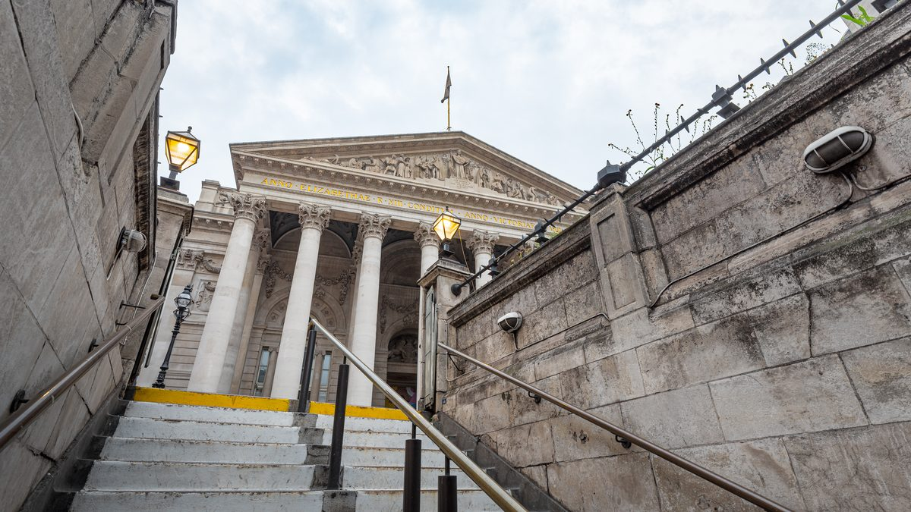
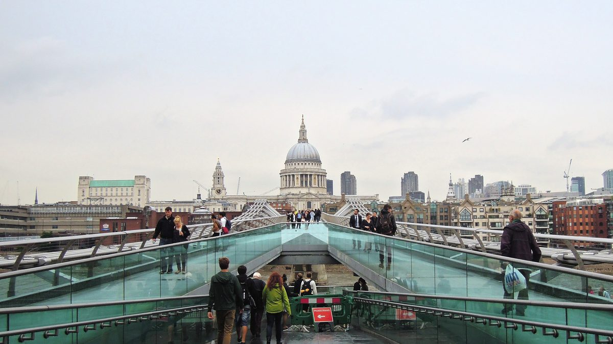
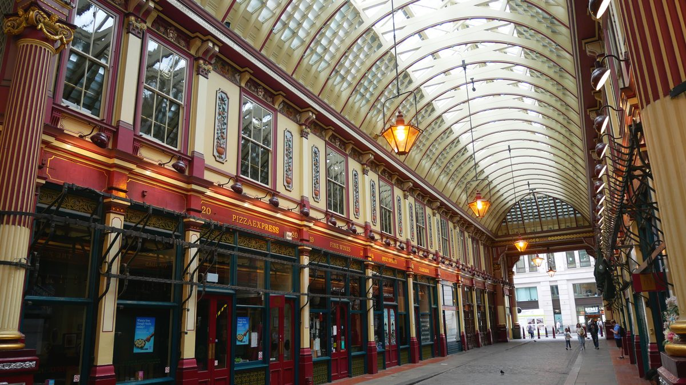
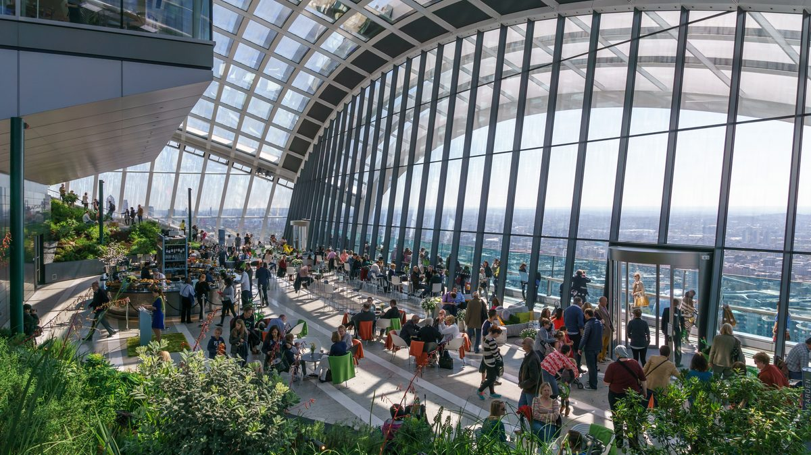
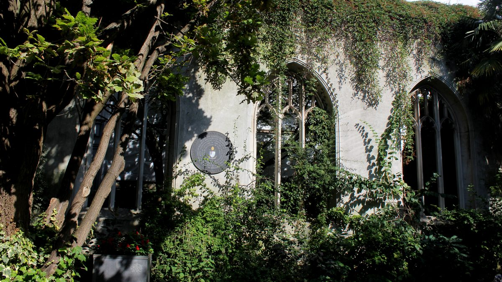
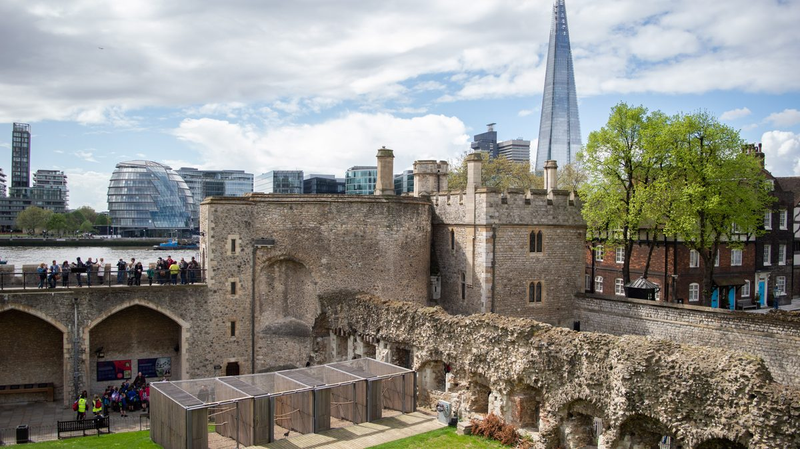
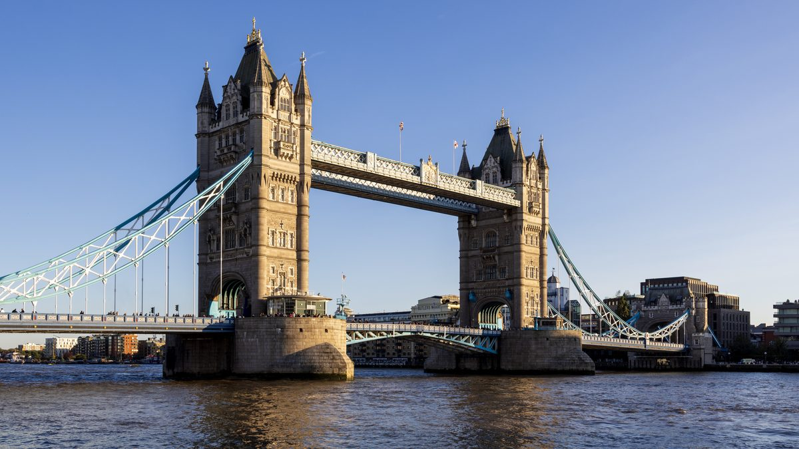

עודכן לאחרונה בספטמבר 2026
הסיטי הוא האזור היחיד בלונדון שבו השאלה הראשונה היא לא "מה רואים" אלא "באיזה יום". ביום שלישי בצהריים שוק לידנהול מלא באנשים בחליפות, מוזיאון הבנק פתוח ומחלק מטילי זהב להרמה, והרחובות סביב בנק הם הלב הפועם של עיר. ביום ראשון אותם רחובות ריקים, השוק סגור, סנט פול פתוחה לתפילה בלבד, והכל שקט. שני הימים טובים, אבל לדברים שונים לגמרי. המדריך הזה מסדר את הסיטי לפי הסדר הגיאוגרפי הנכון, מסנט פול במערב עד מצודת לונדון וגשר המגדלים במזרח, ומסביר מה לעשות בו בכל יום בשבוע, מה בחינם, ומה הכרטיס הגדול האחד שכדאי לקנות.
בחרו כיוון ותראו כאן את המקומות עצמם, עם מה שכדאי לדעת לפני שהולכים.
מה זה הסיטי, ולמה הוא מקום אחר בימי חול

הסיטי הוא לונדון המקורית: הקילומטר הרבוע שהרומאים הקיפו בחומה בשנת 200 לספירה בערך, ושמסביבו צמחה כל השאר. עד היום זו יחידה מנהלית נפרדת, עם ראש עיר משלה, משטרה משלה וחוקים משלה, והיא הרובע הפיננסי של בריטניה: כחצי מיליון איש עובדים בה ביום חול, ורק כמה אלפים גרים בה. זו הסיבה לשני הפרצופים שלה. בימי חול הרחובות מלאים, בתי הקפה והמסעדות פתוחים, ושוק לידנהול הומה בצהריים. בסופי שבוע רוב המסעדות והחנויות ליד המשרדים סגורות, מוזיאון הבנק סגור, והרחובות הצרים מסביב לבנק שקטים כמו עיירה. האתרים הגדולים, המצודה, הגשר, הקתדרלה והתצפיות, פתוחים בשני המצבים, אבל האווירה שונה לגמרי.
ההיסטוריה כאן שכבתית, ורואים אותה במרחק של מטרים: המקדש הרומי מהמאה השלישית שבעה מטרים מתחת לבנק, האמפיתאטרון הרומי מתחת לגילדהול, המונומנט במקום שבו פרצה השריפה הגדולה של 1666 ששרפה ארבע חמישיות מהעיר, סנט פול שכריסטופר רן בנה על החורבות והושלמה ב-1710, וסביב כולם גורדי השחקים של שלושים השנים האחרונות, עם הכינויים שהלונדונים נתנו להם: המלפפון, הווקי טוקי, פורסת הגבינה. בקצה המזרחי, מחוץ לחומה הישנה, עומדים מצודת לונדון, שוויליאם הכובש התחיל לבנות ב-1078, וגשר המגדלים מ-1894, שהוא בעצם הגבול של המדריך הזה.
מה שזה אומר לכם בפועל: הסיטי הוא הליכה של שני קילומטרים ממערב למזרח, מסנט פול דרך בנק ולידנהול, אל התצפיות, ומהן למצודה ולגשר. בחצי יום עושים את ההליכה עם כרטיס אחד, וביום מלא מוסיפים את המצודה, שהיא לבדה שלוש שעות. והיום הנכון הוא יום חול, בעיקר בגלל השוק ובגלל הבנק.
למי האזור הזה מתאים, ולמי פחות
סנט פול, מצודת לונדון וגשר המגדלים הם שלושה מחמשת הדברים שכולם באים לראות, וכולם על קו אחד. זה היום השני של רוב המסלולים שלנו.
תכשיטי הכתר, העורבים ושומרי המצודה, רצפת הזכוכית בגשר, מטיל הזהב בבנק, וגן בקומה 35. יום שלם של דברים שילדים באמת זוכרים.
הקתדרלה, המצודה, מוזיאון הבנק, המקדש הרומי, הברביקן ורכבת הדואר, כולם מתחת לגג, ורובם בחינם. מהאזורים הטובים בעיר ליום רטוב.
שתי התצפיות הגבוהות בעיר בחינם, שני אתרים רומיים בחינם, מוזיאון בחינם, שוק וגנים. הכרטיסים הגדולים הם בחירה, לא הכרח.
ולמי זה פחות מתאים. מי שמחפש אוכל טוב בסוף השבוע יתאכזב, כי בשבת וביום ראשון הסיטי הוא מדבר קולינרי, ואז אוכלים מעבר לנהר בבורו או בשורדיץ׳ הסמוכה. מי שרוצה שכונה עם חיי רחוב וחנויות קטנות לא ימצא אותה כאן, כי הסיטי הוא רובע משרדים. ומי שמנסה לדחוס את סנט פול, את המצודה, שתי תצפיות ומוזיאון ליום אחד יגמור אותו עם רגליים כואבות ובלי לזכור כלום. הכלל: כרטיס גדול אחד ביום, ושתי התצפיות בחינם משלימות.
📅 ימי חול מול סופי שבוע, מקום אחר מקום
זה הלב של המדריך הזה. הטבלה נכונה לספטמבר 2026 לפי האתרים הרשמיים, וכמו תמיד בודקים לפני שיוצאים, כי שעות משתנות.
| מקום | ימי חול | סוף השבוע | עלות |
|---|---|---|---|
| קתדרלת סנט פול | ביקור שני עד שבת מ-8:30, כניסה אחרונה בארבע | שבת רגיל, ראשון תפילה בלבד | בתשלום |
| שוק לידנהול | החנויות והמסעדות פתוחות, השוק הומה בצהריים | המבנה פתוח, רוב החנויות סגורות, חוץ מסופי שבוע נבחרים עם שוק פופ אפ | חינם |
| מוזיאון בנק אוף אינגלנד | שני עד שישי מעשר עד חמש | סגור בסופי שבוע | חינם |
| מקדש מיתרס הרומי | שלישי עד שבת מעשר עד שש, שני סגור | שבת רגיל, ראשון משתים עשרה עד חמש | חינם, בהזמנה |
| סקיי גארדן | מעשר עד שש | מאחת עשרה עד תשע בערב, הכי טוב לשקיעה | חינם, בהזמנה |
| הורייזן 22 | מעשר עד שש | שבת עד חמש, ראשון עד ארבע | חינם, בהזמנה |
| גילדהול והאמפיתאטרון | כל יום מעשר עד חמש | כל יום מעשר עד חמש | חינם |
| מצודת לונדון וגשר המגדלים | פתוחים כל יום | פתוחים כל יום, עמוסים יותר | בתשלום |
| מוזיאון הדואר | רביעי עד שישי מעשר עד חמש, שני ושלישי סגור | שבת וראשון מעשר עד חמש | בתשלום |
המסקנה: מי שיש לו יום אחד בסיטי בוחר יום חול בין שלישי לשישי, ואז הכל פתוח וגם השוק חי. מי שמגיע בסוף השבוע לא מפסיד את הגדולים, ומרוויח רחובות ריקים לצילום ואת סקיי גארדן בשקיעה, אבל מוותר על הבנק, על השוק כמו שהוא אמור להיראות, וביום ראשון על סנט פול. ומי שמתכנן יום מלא עם המצודה יכול לעשות אותו בכל יום, כי המצודה והגשר לא סוגרים.
⛪ קתדרלת סנט פול, ההתחלה של ההליכה

קתדרלת סנט פול היא הבניין שממנו מתחילים, גם גיאוגרפית וגם רגשית. כריסטופר רן בנה אותה על חורבות הקתדרלה הגותית שנשרפה ב-1666, השלים אותה ב-1710, והכיפה שלה הייתה הדבר הגבוה בלונדון עד שנות השישים של המאה העשרים. התמונה שלה עומדת בעשן ההפצצות של 1940 הפכה אותה לסמל, ועד היום בניינים חדשים בסיטי מתוכננים כך שלא יסתירו אותה מנקודות מבט מסוימות. בפנים: הכיפה עם גלריית הלחישות, שבה לחישה אל הקיר נשמעת בצד השני, ומעליה עוד שתי גלריות עד 528 מדרגות, עם הנוף הטוב ביותר על הסיטי מלמעלה. במרתף קבורים רן עצמו, נלסון ווולינגטון.
נכון לספטמבר 2026 כרטיס מבוגר עולה 27 ליש״ט וילד 10.50, בהזמנה מראש זול מעט יותר, והכרטיס כולל את הכיפה ואת המרתף. ביקור בשני עד שבת מ-8:30 בבוקר, כניסה אחרונה בארבע, והכיפה נפתחת ב-9:30 עם כניסה אחרונה ברבע אחרי ארבע. ביום ראשון נכנסים לתפילות בלבד, בחינם, ובלי לסייר, וזו דרך יפה לראות את הפנים למי שלא רוצה לשלם. שעתיים עם הכיפה, שעה בלי. לחיצה על שם הקתדרלה בטקסט פותחת את המחיר המעודכן ביותר שיש לנו. ומי שלא נכנס בכלל לא מפסיד את החוץ: המדרגות בחזית, הגן מאחור, ואמצע גשר המילניום לתמונה.
🏛️ בנק, המקדש הרומי וגילדהול: ההיסטוריה שמתחת לרחוב
מסנט פול הולכים מזרחה עשר דקות עד צומת בנק, הצומת שסביבו עומדים בנק אוף אינגלנד, הרויאל אקסצ׳יינג׳ עם העמודים ובית ראש העיר. כאן שלושה דברים חינמיים במרחק דקות זה מזה, ושניים מהם רומיים.
- מקדש מיתרס הרומי. מתחת לבניין הזכוכית של בלומברג, שבעה מטרים מתחת לרחוב, שוחזרו במקומם המקורי שרידי מקדש מהמאה השלישית לכת המסתורין של מיתרס, שהתגלו ב-1954 בעבודות בנייה. יורדים דרך גלריה של ממצאים, ולמטה מחכה מופע אור וקול של רבע שעה בחושך. חינם, שלישי עד שבת מעשר עד שש וראשון משתים עשרה, סגור ביום שני, ומומלץ להזמין חלון זמן מראש באתר כי לפעמים נגמר. שעה.
- מוזיאון בנק אוף אינגלנד. בתוך מתחם הבנק המרכזי, בכניסה מרחוב ברת׳ולומיו ליין: הסיפור של הכסף הבריטי, שטרות מזויפים, ומטיל זהב אמיתי של שלושה עשר קילוגרם שמותר לנסות להרים דרך חור בזכוכית. חינם, בלי הזמנה, ורק שני עד שישי מעשר עד חמש. שעה, וזה הדבר שהילדים זוכרים מהסיטי.
- גלריית גילדהול והאמפיתאטרון הרומי. חמש דקות צפונה, בחצר של בית העירייה של הסיטי מהמאה החמש עשרה. בגלריה ציורים ויקטוריאניים של לונדון, ובמרתף, מסומן על החצר בעיגול כהה, שרידי האמפיתאטרון הרומי משנת 70 לספירה, שהתגלו רק ב-1988. חינם, כל יום מעשר עד חמש, והאולם הגדול ההיסטורי נפתח רק בסיור מודרך בתשלום.
ועוד עשר דקות צפונה, מעבר לגבול הסיטי הישן, שוכן בית הקברות באנהיל פילדס: בית הקברות של הנונקונפורמיסטים, מי שסירבו לכנסייה האנגליקנית, ששימש מ-1665 עד 1854, ובו קבורים ויליאם בלייק, דניאל דפו, מחבר רובינזון קרוזו, וג׳ון באניין. היום זה גן שקט בין המשרדים, בחינם, ומצבת בלייק ליד השביל המרכזי מסומנת ומוקפת מטבעות. עצירה של רבע שעה למי שאוהב ספרות, לא יעד בפני עצמו. מדריך הפינות הנסתרות מונה עוד מקומות כאלה בעיר, ומדריך המוזיאונים בחינם מסביר על שאר המוזיאונים הקטנים.
🥐 שוק לידנהול, הצהריים של הסיטי

שוק לידנהול הוא לא שוק במובן של דוכנים, אלא ארקדה ויקטוריאנית מ-1881 עם תקרה מזוגגת, חזיתות אדומות וזהובות ופנסים, שבמקומה עמד שוק בשר ועופות מאז המאה הארבע עשרה, ולפניו הפורום הרומי. היום יש בה פאבים, מסעדות וחנויות, ובימי חול בצהריים היא מתמלאת בעובדי הסיטי. זה המקום לצהריים באזור, בישיבה או בעמידה, ומי שאוכל בפאב לידנהול ביום חול בשתיים רואה את הסיטי כמו שהוא. מעריצי הארי פוטר מכירים אותה מבלי לדעת: הכניסה לסמטת דיאגון בסרט הראשון צולמה כאן, בחנות האופטיקה בבולס הד פסג׳.
וזה גם המקום שמדגים את כלל סופי השבוע: המבנה עצמו פתוח תמיד, אבל בשבת וביום ראשון רוב החנויות והמסעדות סגורות, וזה יפה לצילום ורע לצהריים. יוצאי דופן הם סופי שבוע נבחרים בין האביב לחג המולד, שבהם המועצה מפעילה שוקי פופ אפ של אומנות ווינטג׳ בין שתים עשרה לחמש, ובודקים את התאריכים באתר השוק. מדריך השווקים משווה אותו לשווקים האמיתיים של העיר, ומדריך הארי פוטר אוסף את שאר אתרי הצילום.
🌆 התצפיות: שתיים בחינם ואחת במדרגות

הסיטי הוא המקום היחיד בלונדון שבו רואים את העיר מלמעלה בלי לשלם, פעמיים. סקיי גארדן בקומה 35 של הבניין המכונה ווקי טוקי הוא גן טרופי מזוגג עם מרפסת פתוחה, נוף על התמזה, גשר המגדלים והמצודה, ובר. הכניסה חינם, אבל חובה להזמין חלון זמן באתר הרשמי: הכרטיסים משתחררים שבוע אחר שבוע כשלושה שבועות קדימה, ונגמרים מהר, במיוחד לסופי שבוע. שני עד שישי מעשר עד שש, ובסופי שבוע מאחת עשרה עד תשע בערב, וזו הסיבה שסקיי גארדן בשקיעה של שבת הוא מהדברים היפים בעיר, בחינם. מביאים תעודה מזהה.
הורייזן 22 היא החדשה והגבוהה: קומה 58 של 22 בישופסגייט, הבניין הגבוה בסיטי, עם נוף של שלוש מאות מעלות, ולפי מה שידוע לנו התצפית החינמית הגבוהה באירופה. גם כאן חינם ובהזמנה מראש, וקל יותר להשיג מקום. ימי חול מעשר עד שש, שבת עד חמש וראשון עד ארבע. ומי שלא הצליח להזמין לאף אחת מהן, או שרוצה להרגיש את הגובה ברגליים, עולה על המונומנט לשריפה הגדולה: עמוד האבן של רן מ-1677, שגובהו 61 מטרים הוא בדיוק המרחק ממנו למאפייה שבה פרצה השריפה, עם 311 מדרגות לולייניות ותצפית פתוחה למעלה. נכון לספטמבר 2026 הכרטיס כמה ליש״ט בודדים, בלי הזמנה. מדריך התצפיות משווה בין כולן, כולל השארד והלונדון איי מעבר לנהר, ומסביר איזו שווה למי.
🌿 סנט דנסטן וסנט קתרין: השקט שבין המגדלים

בין המונומנט למצודה, בסמטה שרוב האנשים לא נכנסים אליה, מסתתר סנט דנסטן אין דה איסט: כנסייה מימי הביניים עם מגדל של רן, שהופצצה ב-1941 ולא שוקמה. במקום זה, ב-1971, הפכה הסיטי את החורבות לגן: קיסוס וגפן מטפסים על הקשתות הגותיות, מזרקה קטנה במרכז, ספסלים בחלונות שאין בהם זכוכית. חינם, פתוח כל יום, ואחת הפינות היפות והשקטות בלונדון, כשעובדי הסיטי אוכלים בה סנדוויץ׳ בצהריים והשאר ריק. עצירה של רבע שעה בדרך למצודה, ולא מוותרים עליה.
ומעבר למצודה, מזרחה לגשר, נמצא סנט קתרין דוקס: המרינה הישנה מ-1828, שהמחסנים שלה הפכו למסעדות ולדירות, והבריכה מלאה ביאכטות ובסירות עץ. אין כאן אטרקציה, ויש כאן את הדבר שהכי חסר באזור: מקום נעים לשבת בו עם קפה ליד המים, חמש דקות ממצודת לונדון ובלי התיירים שלה. עם ילדים זה המקום לצהריים אחרי המצודה, ובקיץ יש כאן שולחנות על המזח.
🏰 מצודת לונדון וגשר המגדלים, הכרטיס הגדול של היום

מצודת לונדון היא הסיבה שרוב האנשים מגיעים לסיטי, וגם הסיבה שהיום מתארך. המגדל הלבן שוויליאם הכובש בנה ב-1078 כדי להפחיד את הלונדונים, ומסביבו תשע מאות שנים של ארמון, כלא, בית מטבעה, גן חיות ומקום הוצאה להורג: כאן נכלאו ונערפו שתיים מנשותיו של הנרי השמיני, כאן נעלמו שני הנסיכים, וכאן שמורים תכשיטי הכתר, כולל הכתר שמשמש בהכתרות. הסיור עם שומרי המצודה, היאומן וורדרס במדים האדומים, יוצא כל חצי שעה מהכניסה, כלול בכרטיס, ומצחיק ומצמרר לסירוגין, וזה הדבר שכדאי להתחיל בו. אחריו תכשיטי הכתר, שאליהם הולכים מוקדם כי התור מתארך אחרי הצהריים, המגדל הלבן והשריון, והעורבים, שהאגדה אומרת שאם יעזבו, הממלכה תיפול.
נכון לספטמבר 2026 כרטיס מבוגר בהזמנה מראש עולה 37 ליש״ט, בקופה יותר, והמצודה פתוחה כל יום. מחשבים שלוש שעות מלאות, ומגיעים בפתיחה, כי בשעה שתיים בקיץ התור לתכשיטים הוא שעה. לחיצה על שם המצודה בטקסט פותחת את המחיר המעודכן ביותר שיש לנו. ומהמצודה מאתיים מטרים עד גשר המגדלים: הגשר הוויקטוריאני מ-1894 עם שני המגדלים והגשר המתרומם, שהחצייה עליו ברגל חינם ונותנת את הנוף הטוב ביותר על המצודה ועל הנהר. התערוכה בפנים, עם מעברי הזכוכית בגובה ארבעים ושניים מטרים וחדרי המכונות הוויקטוריאניים, היא בתשלום, נכון לספטמבר 2026 בסביבות 18 ליש״ט למבוגר, שעה, ושווה בעיקר עם ילדים. מדריך המלוכה מסביר את ההיסטוריה של הארמונות, ומדריך התמזה מסביר מתי הגשר נפתח ואיך רואים את זה.

👨👩👧 הסיטי עם ילדים
הסיטי מפתיע עם ילדים, כי מה שנראה כמו רובע משרדים מלא דברים שאפשר לגעת בהם, לטפס עליהם ולהיבהל מהם. הכלל: המצודה בבוקר, כשיש כוח, והשאר אחר הצהריים.
- מצודת לונדון. שומרי המצודה, העורבים, השריון, תא העינויים ותכשיטי הכתר. שלוש שעות שעוברות מהר, ומגיעים בפתיחה.
- גשר המגדלים. מעבר הזכוכית בגובה ארבעים ושניים מטרים, שעליו עומדים ורואים את הכביש והנהר מתחת לרגליים, וחדרי המכונות עם מנועי הקיטור. בתשלום, ושווה.
- סנט קתרין דוקס. הסירות, המרינה והשולחנות ליד המים, לצהריים אחרי המצודה. בחינם, ובלי לחץ.
- סקיי גארדן. גן בשמיים, מרפסת פתוחה ומעלית מהירה. בחינם, בהזמנה מראש, ובסופי שבוע פתוח עד הערב.
- מוזיאון בנק אוף אינגלנד. רק בימי חול, ורק בשביל מטיל הזהב של שלושה עשר קילוגרם שמנסים להרים. חינם.
- מוזיאון הדואר ורכבת הדואר. בקלרקנוול, רבע שעה צפונה מערבה, ולכן תוספת ולא חלק מההליכה: נסיעה של עשרים דקות ברכבת הדואר הזעירה שהובילה מכתבים מתחת ללונדון, ומוזיאון עם משחקים. רביעי עד ראשון, בתשלום, ומזמינים מקום ברכבת מראש.
🌧️ אם יורד גשם
הסיטי הוא מהאזורים הטובים בלונדון לגשם, בתנאי שזה יום חול. מתחילים בסנט פול, שעתיים מתחת לכיפה, יורדים למקדש הרומי שכולו מתחת לרחוב, ממשיכים למוזיאון הבנק, שסגור בסופי שבוע, ואוכלים צהריים בלידנהול המקורה. אחר הצהריים המצודה, שרוב הביקור בה בתוך המגדלים, או מרכז הברביקן, מתחם התרבות הברוטליסטי מצפון לסיטי עם המסדרונות המקורים, הגלריות והחממה הטרופית, שהשיטוט בו חינם. ומי שיש לו ילדים לוקח אותם למוזיאון הדואר ולרכבת הדואר, שגם היא מתחת לאדמה. את התצפיות שומרים ליום בהיר, כי בגשם ובענן לא רואים מהן כלום. המדריך ליום גשום בלונדון מכסה את שאר האפשרויות בעיר, והגרסה למשפחות מוסיפה את הילדים.
🚶 חצי יום או יום מלא, מוכן להליכה
המסלול הזה הולך ממערב למזרח, מסנט פול למצודה, משתי סיבות: סנט פול נסגרת לביקור בארבע והכיפה קודם, והמצודה וגשר המגדלים יפים ביותר באור של סוף היום. חצי היום הוא ההליכה עצמה עם כרטיס אחד, סנט פול, ותצפית חינמית אחת. היום המלא מוסיף את המקדש הרומי ואת המצודה, והוא יום ארוך ועמוס, ולכן אנחנו מציגים אותו בנפרד ולא מנסים לדחוס הכל.
העצירות במתכנן הן ארבע, אבל ההליכה עוברת ליד עוד הרבה: צומת בנק והרויאל אקסצ׳יינג׳, המונומנט, סנט דנסטן, וכיכר טריניטי מול המצודה. הם בדרך, ומי שרוצה מוסיף אותם למסלול בלחיצה על השם.
חצי יום בנוי מראש שמתחיל מתחת לכיפה של סנט פול ונגמר על גשר המגדלים. לחיצה אחת מכניסה את כולו למסלול שלכם, ומשם אפשר לגרור, להחליף ולהוסיף ימים.
חצי היום נוסף למסלול שלכם ואפשר להמשיך לגלוש. אם כבר בניתם מסלול קודם, הוא לא יימחק.
- 10:00קתדרלת סנט פולמתחנת St Paul's. שעתיים עם הכיפה, שעה בלי. ביום ראשון רק החוץ וגשר המילניום
- 12:30שוק לידנהולעשר דקות הליכה דרך צומת בנק והרויאל אקסצ׳יינג׳. צהריים בארקדה, וביום חול זה הסיטי בשיאו
- 14:00סקיי גארדןחמש דקות. חלון זמן שהוזמן שלושה שבועות מראש, שעה למעלה. או הורייזן 22, שקל יותר להשיג
- 15:30גשר המגדליםרבע שעה דרך המונומנט וגן סנט דנסטן, לאורך המצודה מבחוץ, וחצייה של הגשר ברגל. סיום בתחנת Tower Hill
פירוט מלא של היום, כולל הגרסה המלאה
| שעה | איפה | מה עושים |
|---|---|---|
| 10:00 | קתדרלת סנט פול | מגיעים לתחנת St Paul's, שיוצאת ממש מול הקתדרלה. הכיפה קודם, כשיש כוח, ואז הרצפה והמרתף. ביום המלא מתחילים בתשע. |
| 12:00 | ביום המלא: המקדש הרומי | הולכים מזרחה בצ׳יפסייד עד בנק, יורדים למקדש בבניין בלומברג בחלון הזמן שהוזמן. שעה, ומי שעושה את חצי היום עובר ליד ומצלם את צומת בנק. |
| 12:30 | שוק לידנהול | מבנק שלוש דקות מזרחה. צהריים באחד הפאבים או במסעדות הארקדה, וביום חול מגיעים לפני אחת, כי בשתיים אין מקום. |
| 14:00 | סקיי גארדן | חמש דקות דרומה לווקי טוקי, עם ההזמנה והתעודה. הגן, המרפסת, וקפה עם הנוף. מי שלא השיג מקום עולה במקום זה למונומנט, מאתיים מטרים משם. |
| 15:15 | ביום המלא: מצודת לונדון | עשר דקות דרך סנט דנסטן. הסיור עם שומרי המצודה, תכשיטי הכתר, המגדל הלבן והעורבים. שלוש שעות, וגשר המגדלים אחריה באור של הערב. |
| 15:30 | גשר המגדלים | בחצי היום: מהתצפית דרומה למונומנט, מזרחה דרך גן סנט דנסטן, ולאורך חומת המצודה מבחוץ עד הגשר. חוצים אותו ברגל, מצלמים את המצודה מהצד השני, ומסיימים בתחנת Tower Hill, או ממשיכים לגדה הדרומית. |
חלופות ותוספות
- בסוף השבוע: אותו מסלול, אבל צהריים לא בלידנהול אלא בסנט קתרין דוקס, וסקיי גארדן בשקיעה במקום בשתיים. ביום ראשון סנט פול מבחוץ בלבד, ואז מתחילים בגילדהול.
- הגרסה בחינם בקישור שמעל: המקדש הרומי, גילדהול, לידנהול, סקיי גארדן, סנט דנסטן וסנט קתרין. שש עצירות ואפס ליש״ט, ורק ההזמנות מראש.
- המשפחות הופכות את הסדר: המצודה בפתיחה, הגשר, צהריים במרינה, וסקיי גארדן בסוף.
- קצר יותר, שעתיים: סנט פול מבחוץ, הליכה דרך בנק ולידנהול, ותצפית אחת. או רק המצודה, כשלוש שעות, למי שזה מה שבא לראות.
- להמשיך לגדה הדרומית: מגשר המגדלים חוצים לצד השני, ומדריך הגדה הדרומית ממשיך משם מערבה, מ-HMS בלפסט ועד הלונדון איי. או הפוך, מגשר המילניום לסנט פול, למי שהתחיל שם.
- להמשיך לשורדיץ׳: מלידנהול או מהורייזן 22 הולכים עשר דקות צפונה דרך תחנת Liverpool Street, ומדריך שורדיץ׳ ממשיך משם לשוק ספיטלפילדס ולבריק ליין. ככה בנוי היום השני במסלולים שלנו.
🚇 איך מגיעים, ואיזו תחנה לאיזה חלק
הסיטי הוא אזור תחבורה 1, ואין בו נקודה שרחוקה יותר מחמש דקות מתחנה. הבחירה קובעת מאיזה קצה מתחילים, וההיגיון פשוט: נכנסים במערב ויוצאים במזרח.
- St Paul's, להתחלה. קו סנטרל האדום. היציאה מול הקתדרלה, וזו התחנה של הבוקר.
- Bank ו-Monument, לאמצע. תחנה כפולה שמחוברת במעברים: בנק בקווי סנטרל, נורת׳רן, ווטרלו אנד סיטי והרכבת הקלה, ומונומנט בקווי דיסטריקט וסירקל. מכאן דקות למקדש הרומי, לבנק, ללידנהול, לתצפיות ולמונומנט. הרכבת הקלה מבנק מגיעה ישירות לגריניץ׳.
- Tower Hill, לסוף. קווי דיסטריקט וסירקל, ממש מול המצודה, ולידה תחנת Tower Gateway של הרכבת הקלה. מכאן חוזרים בסוף היום, וזו התחנה למי שמגיע רק למצודה.
- Liverpool Street, מהית׳רו ולשורדיץ׳. קו אליזבת הסגול מגיע לכאן ישירות משדה התעופה, ומהתחנה חמש דקות להורייזן 22 ועשר לשוק לידנהול. וזו הדלת לשורדיץ׳.
- Farringdon, למוזיאון הדואר. קו אליזבת ותמסלינק, עשר דקות הליכה למוזיאון, לגרסת הילדים ויום הגשם.
באוטובוס, קו 15 נוסע לאורך כל הציר, מטרפלגר דרך סנט פול, בנק והמונומנט עד המצודה, וזה הקו שרואים ממנו את הסיטי מלמעלה, מהקומה השנייה. המדריך לקווי התחתית מסביר איזה קו עושה מה, ומדריך התחבורה מסביר את תקרות התשלום.
מה משלבים עם הסיטי באותו יום
- שורדיץ׳ אחר הצהריים, עשר דקות צפונה מלידנהול. שוק ספיטלפילדס, בריק ליין ואמנות הרחוב, ומדריך שורדיץ׳ מסביר באיזה יום. ככה בנוי היום השני במסלול שלושת הימים.
- הגדה הדרומית, מעבר לגשר המגדלים או לגשר המילניום. HMS בלפסט, בורו והשארד ממש מול המצודה, ומדריך הגדה הדרומית ממשיך משם.
- גריניץ׳ ברכבת הקלה, מבנק או מ-Tower Gateway, עשרים דקות, ומדריך גריניץ׳ מחכה בצד השני.
- לינה במזרח. מי שישן בסיטי או בשורדיץ׳ הולך ברגל למצודה, ומדריך הלינה במזרח מסביר למה בסופי שבוע המלונות כאן זולים.
🔗 איך הסיטי משתלב בטיול שלכם
הכלל שלנו: הסיטי הוא היום השני, אחרי שכבר ראיתם את הביג בן ואת הנהר, וזה היום שבו מבינים שלונדון עתיקה בהרבה מהפרלמנט. עם ילדים, המצודה היא הבוקר שבונים סביבו את היום, ובלי ילדים, ההליכה עם התצפיות היא היום, והמצודה תוספת.
- בטיול של שלושה ימים, היום השני: המצודה, הגשר, לידנהול וסקיי גארדן בבוקר, ושורדיץ׳ אחר הצהריים. מסלול שלושת הימים בנוי בדיוק ככה.
- בטיול של חמישה ימים, אותו יום, ובנוסף בוקר לסנט פול ולמקדש הרומי ביום אחר. מסלול חמשת הימים משאיר לזה מקום.
- בטיול של שבעה ימים, יש זמן ליום המלא שלמעלה, כולל הבנק, גילדהול והורייזן 22. מסלול שבעת הימים נותן לו את היום.
- ביום גשום, זה האזור שמחליף כל יום אחר בתוכנית, בתנאי שזה יום חול.
שאלות שחוזרות על עצמן
כמה זמן צריך לסיטי ולמצודת לונדון?
חצי יום לסיטי עצמו: סנט פול, ההליכה דרך בנק ושוק לידנהול, תצפית אחת חינמית וגשר המגדלים, בערך שני קילומטרים. מצודת לונדון לבדה היא שלוש שעות, ולכן היום המלא הוא הסיטי בבוקר והמצודה אחר הצהריים, ולא יותר מכרטיס גדול אחד נוסף.
מתי כדאי להגיע לסיטי, ביום חול או בסוף השבוע?
ביום חול, אם אפשר. בסופי שבוע חלק גדול מהחנויות והמסעדות בשוק לידנהול סגור, מוזיאון בנק אוף אינגלנד סגור, המקדש הרומי סגור ביום שני, וביום ראשון קתדרלת סנט פול פתוחה לתפילה בלבד. מצודת לונדון, גשר המגדלים ושתי התצפיות פתוחים כל יום, וסקיי גארדן פתוח בסופי שבוע עד תשע בערב.
האם התצפיות בסיטי באמת חינם?
כן, שתיהן. סקיי גארדן בקומה 35 והורייזן 22 בקומה 58 פתוחות בלי תשלום, אבל שתיהן דורשות הזמנת חלון זמן מראש באתר הרשמי, וסקיי גארדן משחרר כרטיסים כשלושה שבועות קדימה ונחטף. מי שלא הצליח להזמין עולה למונומנט בכמה ליש״ט ו-311 מדרגות.
כמה עולה יום בסיטי?
אפשר לעבור בסיטי חצי יום בלי לשלם על כניסה אחת: התצפיות, המקדש הרומי, גילדהול, מוזיאון הבנק, שוק לידנהול והגנים כולם חינם. בתשלום רק סנט פול, נכון לספטמבר 2026 27 ליש״ט למבוגר, מצודת לונדון, 37 ליש״ט בהזמנה מראש, התערוכה בגשר המגדלים והמונומנט.
צילומים במדריך הזה מוויקישיתוף, ברישיונות קריאייטיב קומונס: תמונת הפתיחה, קו הרקיע של הסיטי Colin and Kim Hansen, CC BY-SA 4.0; צומת בנק Julian Herzog, CC BY 4.0; סנט פול Briefs4reskin, CC BY-SA 4.0; שוק לידנהול Doyle of London, CC BY-SA 4.0; סקיי גארדן Colin, CC BY-SA 4.0; סנט דנסטן Chris Heaton, CC BY-SA 2.0; מצודת לונדון Tristan Surtel, CC BY-SA 4.0; גשר המגדלים The wub, CC BY-SA 4.0. התמונות נחתכו לרוחב העמוד.